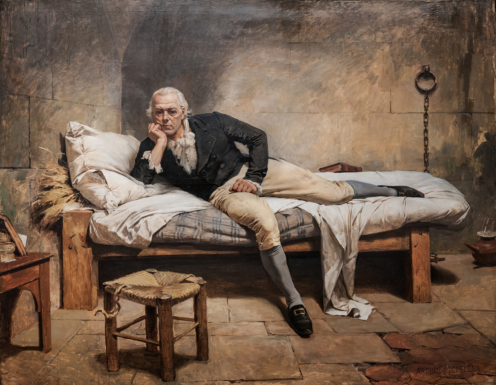

Sebastián Francisco de Miranda y Rodríguez Espinoza ............. test
Caracas, 28 de marzo de 1750-San Fernando, 14 de julio de 1816
“Soy y seré perpetuamente, acérrimo defensor de los derechos, libertades e independencia de nuestra América, cuya honrosa causa defiendo y defenderé toda mi vida; tanto porque es justa y necesaria para la salvación de sus desgraciados habitantes, como porque interesa además en el día a todo el género humano.
Francisco de Miranda Político, militar, diplomático, escritor
Obra: Miranda en la Carraca.
Técnica: Oleo sobre lienzo, 1896.
Autor: Arturo Michelena.
Un legado que se convirtió en leyenda
Conocido como El Primer Venezolano Universal y El Americano más Universal, Francisco de Miranda fue partícipe de la Independencia de los Estados Unidos, de la Revolución Francesa y posteriormente de la Independencia de Venezuela. Uno de sus objetivos era la lucha por la libertad hispanoamericana.
Sebastián Francisco de Miranda y Rodríguez nació el 28 de marzo de 1750 en Caracas, Venezuela. En 1762 inició sus estudios de gramática y latín. Más tarde ingresó a artes (bachillerato) en la Universidad de Caracas, y luego se enlistó en el ejército español en 1771. Participó en los tres magnos acontecimientos de su tiempo:la independencia de los Estados Unidos, la revolución francesa y la lucha por la libertad hispanoamericana. Al ser uno de los primeros en pensar acerca de la existencia de una Gran Colombia unida. [1]
En 1781, Miranda combatió en la batalla de Pensacola, dentro de la guerra de independencia de las trece colonias, donde los ingleses sufrieron una derrota. [2]En 1783 se vio obligado a exiliare en Estados Unidos porque el Santo Oficio lo perseguía debido a la posesión de varios “libros prohibidos” por esta institución clerical. Dos años después, Miranda emprendió su rumbo a Europa, donde vivió hasta su retorno a Venezuela en 1810. Gracias a su diario contamos con múltiple información sobre el Siglo de la Luces (S. XVIII), pues escribió sus impresiones y actividades como viajero e investigador. Algunos periódicos londinenses se refirieron a él como “un hombre ilustrado y amante de la libertad de Suramérica"[3].
En Inglaterra, Francisco Miranda buscó apoyo para la independencia de Hispanoamérica, pero no lo consiguió y decidió viajar a Francia. Sin embargo, durante su estancia en el país galo, Miranda fue nombrado mariscal de campo, equivalente de la época a general de brigada, bajo las órdenes de Charles François Dumouriez. La posición se hizo efectiva a partir del 1 de septiembre de 1792 y el 20 del mismo mes tuvo su primera victoria en Valmy. Junto a Dumouriez y el Ejército del Norte, acompañó la ofensiva francesa sobre los Países Bajos (Bélgica y Holanda), tomando las ciudades de Amberes y Roermond.
No obstante, el éxito inicial de esta campaña se desvaneció cuando sufrió las derrotas de Maestricht (21 de febrero de 1793) y Nearwinden (18 de marzo de 1793). [4]Dumouriez responsabilizó a Miranda ante el temido Tribunal Criminal Revolucionario, dirigido por Maximiliano Robespierre. Miranda fue encarcelado en la prisión de La Force y si bien, fue declarado inocente de la derrota de Nearwinden, se había gestado enemigos y siguieron acusándolo de diferentes hechos. Finalmente, el 11 de enero de 1798 logró huir de Francia y, por lo tanto, viajó a Inglaterra, donde retomó sus intentos libertarios en busca de apoyo para las colonias españolas en América.
El 21 de julio de 1810, en Londres se conocieron Miranda y Simón Bolívar cuando este último viajaba como diputado de la Junta de Caracas. Entre ellos se desarrolla una importante amistad, aunque eventos posteriores los separan. [5] Así que el 13 de diciembre de 1810, Miranda desembarcó en La Guaira, Venezuela, teniendo en el lugar un cálido recibimiento.
A pesar de que Miranda vivió en diferentes países, su objetivo no cambió: conseguir apoyo para la independencia de su país y de toda la América hispana, idea que reforzó cuando conoció a Simón Bolívar. Desde que regresó a tierras venezolanas, impulsó la causa con todos sus recursos ideológicos y prácticos para su emancipación. Por tal razón fundó el periódico El Colombiano, donde se difundieron los movimientos independentistas para estallar simultáneamente y con características semejantes en toda Hispanoamérica de 1810-1811. Además, Miranda se preocupó por los símbolos emancipadores. A él se deben los colores de la bandera tricolor de la Gran Colombia amarillo, azul y rojo, [6] también presentes en las banderas de Venezuela, Colombia y Ecuador.
Francisco de Miranda falleció la madrugada del 14 de julio de 1816 como preso político en la prisión “La Carraca”, Cádiz, España. Bolívar lo había entregado bajo acusación de traición, pues a su cargo había estado el ejército patriota y, al parecer, nunca tuvo una política de exterminio contra los enemigos.
Fuentes:
[1] https://www.biografiasyvidas.com/biografia/m/miranda.htm
[2] https://culturizando.com/francisco-de-miranda/
[3]http://www.cervantesvirtual.com/portales/francisco_de_miranda/autor_apunte/
[4] https://www.abc.es/cultura/abci-francisco-miranda-espia-traiciono-espana-y-batallo-simon-bolivar-independencia-venezuela-201607210143_noticia.html
[5] De acuerdo con diversas fuentes, el 25 de julio de 1812 Miranda “traicionó” a los liberales al firmar una capitulación, pacto entre dos involucrados sobre un asunto, de San Mateo https://culturizando.com/francisco-de-miranda/
[6] https://www.venezuelatuya.com/biografias/miranda.htm
[7] página de origen https://www.cndh.org.mx/noticia/francisco-de-miranda-precursor-de-la-emancipacion-latinoamericana-fallecimiento-14-de-julio
Para mas información, visitar Franciso de Miranda en Wikipedia. [ Developed by @ Alibert Villarroel ]